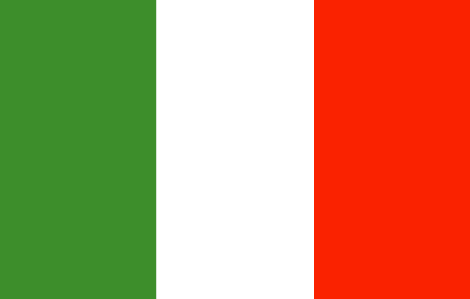

Cidades

História
Itália oficialmente República Italiana (em italiano: Repubblica Italiana), é uma república parlamentar unitária localizada no centro-sul da Europa. Ao norte, faz fronteira com França, Suíça, Áustria e Eslovênia ao longo dos Alpes. A parte sul consiste na totalidade da península Itálica, Sicília, Sardenha, as duas maiores ilhas no mar Mediterrâneo, e muitas outras ilhas menores ficam no entorno do território italiano. Os Estados independentes de San Marino e do Vaticano são enclaves no interior da Itália, enquanto Campione d'Italia é um ex-clave italiano na Suíça. O território do país abrange cerca de 301 338 km² e a maior parte do seu território tem um clima temperado sazonal. Com 60,8 milhões de habitantes em 2015, é a quinta nação mais populosa da Europa e a 23.ª do mundo. Roma, a capital italiana, foi durante séculos o centro político e religioso da civilização ocidental como capital do Império Romano e como sede da Santa Sé. Após o declínio dos romanos, a Itália sofreu inúmeras invasões de povos estrangeiros, desde tribos germânicas, como os lombardos e ostrogodos, aos bizantinos e, mais tarde, os normandos, entre outros. Séculos mais tarde, Itália tornou-se o berço das repúblicas marítimas e do Renascimento, um movimento intelectual extremamente frutífero que seria fundamental na formação subsequente do pensamento europeu.
